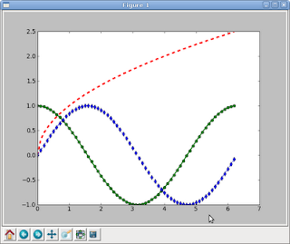

Tutoriales de matplotlib con python. Parte 5
Posted on mar 16 junio 2009 in Tutorial Python • 1 min read
El siguiente ejemplo se muestra como colocar varias curvas en una misma gráfica.
>>> from pylab import *
>>> t=arange(0.,2.*pi,0.1)
>>> s=cos(t)
>>> x=sqrt(t)
>>> y = sin(t)
>>> p1=plot(t,s, 'g-o',linewidth=2)
>>> p2=plot(t,x, 'r--',linewidth=3)
>>> p3=plot(t,y, 'b--d')
>>> show()
Se importa el módulo pylab, luego se define el rango del eje del tiempo, se calcula el coseno, la raíz cuadrada y el seno, luego se muestra cada calculo.

===
¡Haz tu donativo! Si te gustó el artículo puedes realizar un donativo con Bitcoin (BTC) usando la billetera digital de tu preferencia a la siguiente dirección: 17MtNybhdkA9GV3UNS6BTwPcuhjXoPrSzV
O Escaneando el código QR desde billetera: